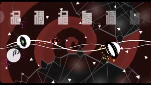

"Nhelv" by SrGuillester

Nhelv is a 2.1 Extreme Demon collaboration created by SrGuillester, Notlsa, and DienID and verified and published by SrGuillester on April 14, 2021. The level is based on the music video of its song, Nhelv by Silentroom, which features fast-paced movement and somewhat flashy lighting. It is also often considered to be one of the best Extreme Demons in the game.
Facts about Nhelv
- This level contains 178,040 objects.
- This level is 2m 36s in length.
- The song used for this level can also be found in the rhythm games Arcaea and Phigros.
- This level has a “npesta mode” which means flashing effects are reduced and/or bright colors darkened as the level under ordinary circumstances would hurt his eyes very badly due to him having astigmatism.
Go back to homepage